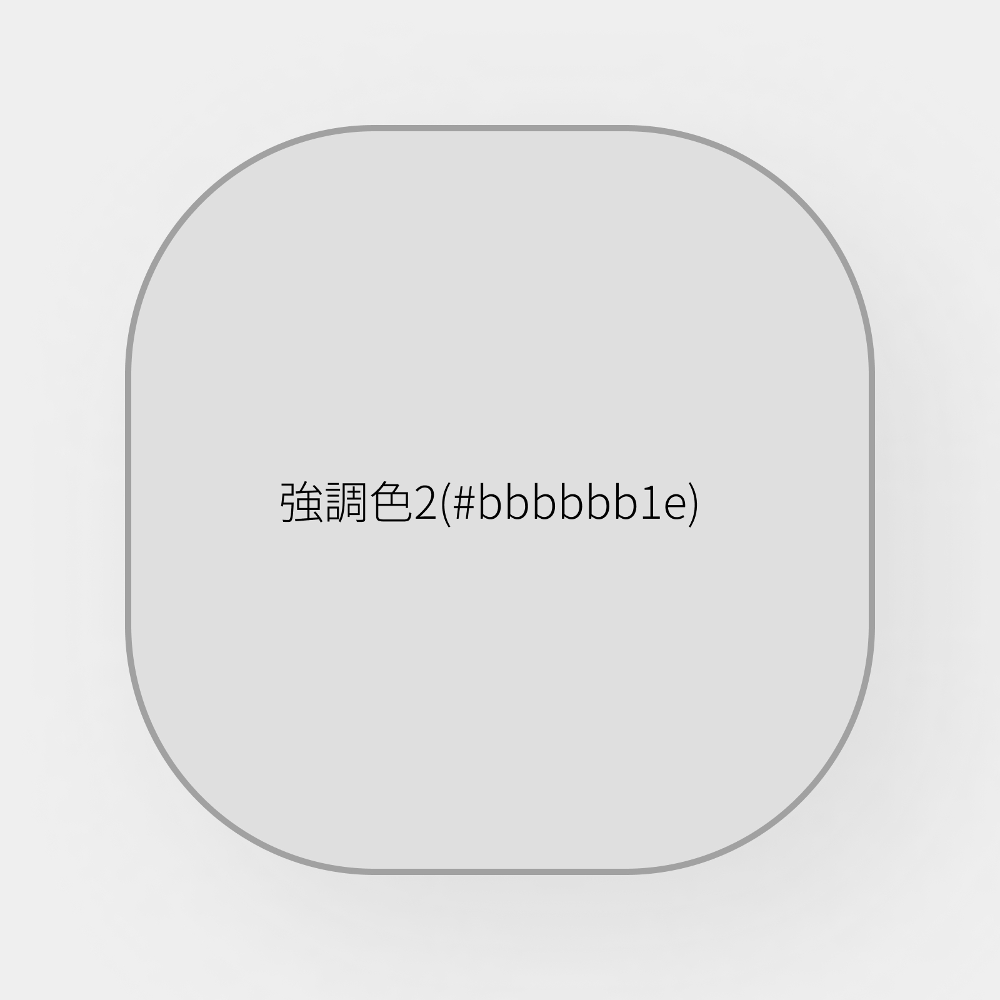
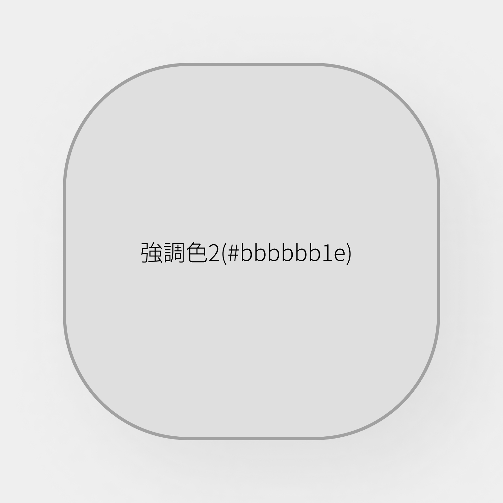

書いてなかったけどさ
仕様書の中には書いていなかったんですが、ボタンのデザインについてここで述べておきます。
ボタンは、以下の画像のような設計になっています。
背景はbbbbbb1e(強調色2)、枠線はa1a1a1(境界線)、影はbfbfbf55(影)に指定してください。ダークモードの場合も同じように、強調色2、境界線、影、としてください。
以上です
仕様書の中には書いていなかったんですが、ボタンのデザインについてここで述べておきます。
ボタンは、以下の画像のような設計になっています。
背景はbbbbbb1e(強調色2)、枠線はa1a1a1(境界線)、影はbfbfbf55(影)に指定してください。ダークモードの場合も同じように、強調色2、境界線、影、としてください。
以上です